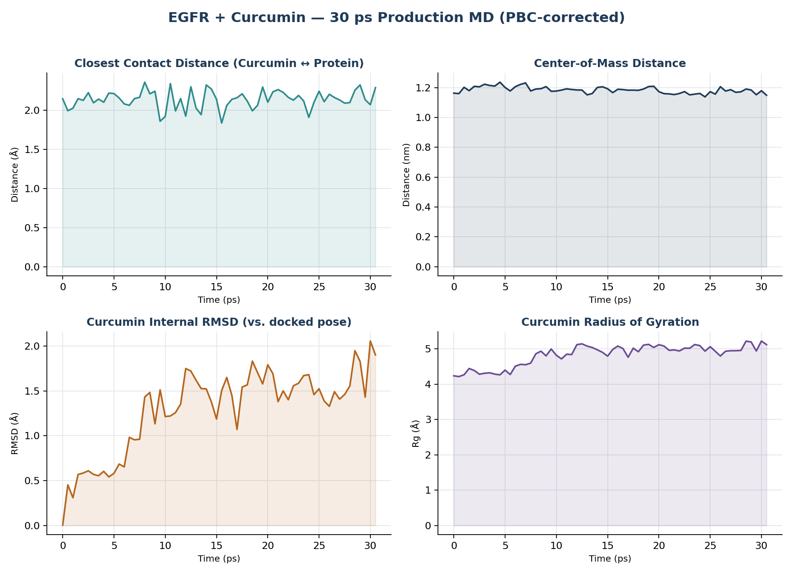

AutoDock Vina docking of curcumin, doxorubicin, erlotinib, and gefitinib against the EGFR tyrosine kinase domain (PDB 1M17), cross-checked with a short GROMACS molecular dynamics run on the top hit.
| Ligand | Top Vina score (kcal/mol) | Role |
|---|---|---|
| Doxorubicin | -10.49 | Reference chemotherapeutic |
| Gefitinib | -9.08 | Approved EGFR inhibitor (reference) |
| Erlotinib | -7.93 | Approved EGFR inhibitor — used for re-docking validation |
| Curcumin | -7.82 | Natural-product candidate — carried through to MD |

TER record marks the real chain break instead of letting pdb2gmx bond across it.gmx trjconv -pbc mol -center before any spatial analysis.